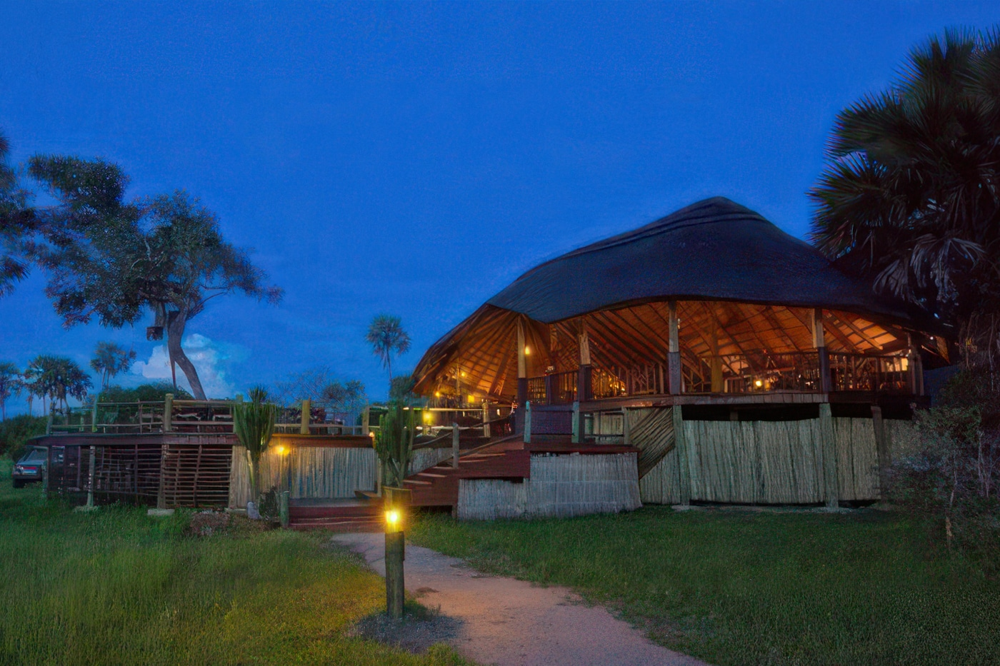
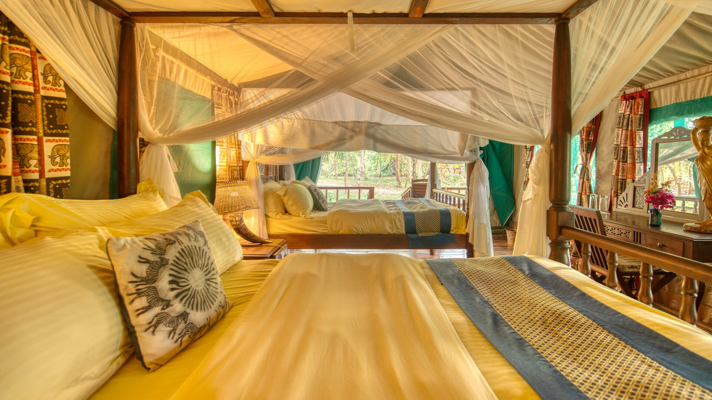
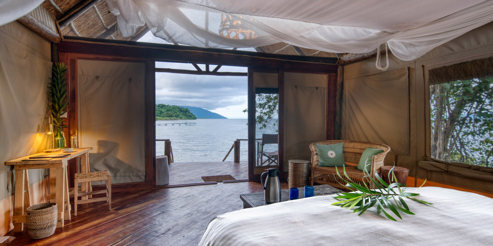
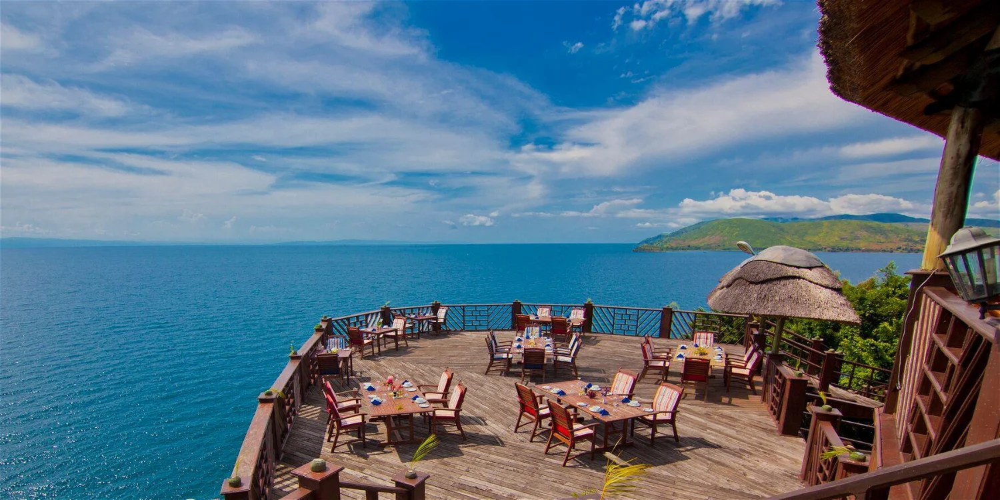

search
language
Experience the wild beauty of Katavi, Gombe Stream, and Mahale Mountains National Parks with diverse wildlife and chimpanzee trekking
Embark on an unforgettable 10-day journey through three of Tanzania's most spectacular and remote wilderness areas - Katavi National Park, Gombe Stream National Park, and Mahale Mountains National Park. This carefully curated safari offers a unique combination of classic big game viewing and intimate primate encounters in some of Africa's most pristine ecosystems.
Experience the raw, untouched wilderness of Katavi National Park, where vast herds of buffalo, elephants, and hippos thrive in one of Tanzania's least-visited parks. Then journey to the shores of Lake Tanganyika to track wild chimpanzees in both Gombe Stream and Mahale Mountains National Parks, made famous by Dr. Jane Goodall's groundbreaking research.
Our expert guides will share their extensive knowledge of these diverse ecosystems, from the floodplains of Katavi to the forested hills of Gombe and Mahale. With comfortable lodge accommodation and seamless logistics including domestic flights and boat transfers, you can focus entirely on these immersive wildlife experiences.
This comprehensive journey is perfect for wildlife enthusiasts seeking both classic safari experiences and intimate primate encounters in Tanzania's most remote wilderness areas.
Your adventure begins with an early morning flight from Dar es Salaam to Mpanda Airport in western Tanzania. Upon arrival, you will be warmly welcomed by your professional driver-guide who will assist with your luggage and transfer you to Katavi National Park, located approximately 55 kilometers away — a journey of about 1 to 1.5 hours depending on road conditions.
Once inside the park, you'll immediately begin your first game drive. Katavi is one of Tanzania's most remote and untouched parks, offering rich wildlife experiences with fewer crowds. You'll explore its vast floodplains, woodlands, and river systems where large herds of buffalo, elephants, hippos, and crocodiles thrive. After a day of adventure, enjoy dinner and an overnight stay at your lodge situated within the park, surrounded by nature.

Wake up to the sounds of the wild as the sun rises over the vast plains of Katavi National Park, one of Tanzania's most remote and unspoiled wilderness areas. After an early breakfast at your lodge, set out for a full-day game drive across the park's diverse landscapes — from floodplains and grasslands to dense woodlands and seasonal lakes.
Katavi is known for its raw, untouched beauty and offers a truly wild safari experience, with very few other visitors around. During your drive, you'll have the chance to spot large herds of buffalo — sometimes numbering in the thousands — along with elephants, giraffes, zebras, and numerous antelope species. The park is also home to a healthy population of predators, including lions, leopards, and hyenas, which you may encounter during the day.
A picnic lunch will be served in a scenic spot within the park, allowing you to enjoy your meal surrounded by the sights and sounds of nature. In the afternoon, continue exploring the park, possibly visiting the Katuma River or Lake Chada, where large pods of hippos and crocodiles gather, especially during the dry season. The area is also a paradise for birdwatchers, with over 400 species recorded.
As the day winds down, return to your lodge in time to relax, enjoy dinner, and reflect on the extraordinary sights and moments of your day. Overnight stay in Katavi.
After breakfast, you'll spend the entire day exploring Katavi National Park in depth. The park is known for its dramatic scenery, seasonal lakes (like Lake Katavi and Lake Chada), and incredible concentrations of wildlife during the dry season. You'll enjoy both morning and afternoon game drives, with chances to witness predators such as lions, leopards, and hyenas on the hunt.
Your guide will also help you track animal behaviours and share insights into the park's unique ecosystem. Between drives, you can relax at the lodge or enjoy a bush lunch if conditions allow. Return to your lodge in the evening for dinner and overnight amid the wild ambiance of Katavi.
After an early breakfast, you'll embark on a scenic game drive en route out of Katavi National Park, making your way toward Kigoma via Mpanda and eventually to Kibirizi Port. The road journey from Katavi to Kigoma (via Mpanda) covers approximately 350 km and takes about 6 hours by road, offering views of rural Tanzanian landscapes.
Upon arrival at Kibirizi Port near Kigoma town, you'll board a motorized boat for a 1–1.5-hour cruise (20 km by water) along the eastern shore of Lake Tanganyika to reach Gombe National Park. This park is famous for Dr. Jane Goodall's chimpanzee research and its lush, mountainous terrain. Once you arrive, check in to your lodge inside the park, have dinner, and rest for the night in preparation for tomorrow's exciting trekking experience.

Wake up to the serene sounds of the forest and the gentle waves of Lake Tanganyika. After breakfast at your lodge, set off on your second day of chimpanzee tracking — a unique opportunity to deepen your understanding of these incredible primates. With guidance from experienced park rangers, you'll venture into a different part of the forest, increasing your chances of observing new chimpanzee families and witnessing varied social behaviors, from grooming and playing to foraging and vocalizing.
As you trek through Gombe's thick vegetation and hilly terrain (some trails moderately challenging), you may also come across other wildlife, including red-tailed monkeys, blue monkeys, and colorful bird species such as the African fish eagle or the crowned hornbill. Along the way, your guide will also share insights into the forest's diverse ecosystem, from the medicinal plants used by chimpanzees to the unique geological formations within the park.
After the morning trek, return to the lodge for lunch and a short rest. In the afternoon, you can opt for a relaxed nature walk along the lakeshore, a swim in the clear waters of Lake Tanganyika, or a visit to Jane Goodall's old research camp (if accessible), where you'll gain a deeper appreciation of her pioneering work in primate conservation.
Dinner will be served at the lodge, followed by a peaceful overnight stay surrounded by the untouched beauty of Gombe. Reflect on your rare experiences and prepare for the journey back on the following day.
You will start your journey from Gombe National Park to Mahale National Park. The distance between these two parks is approximately 80-100 kilometers, depending on the route taken. The travel time will vary, but it typically takes around 2 to 3 hours by boat, as Mahale is best accessed via water transport from Gombe.
The speed of the boat will be around 30 to 40 km/h, depending on the water conditions. Upon arrival at Mahale, you'll be greeted by the natural beauty of the park, which is famous for its population of chimpanzees and stunning landscapes. The day will conclude with a transfer to your accommodation, where you will have dinner and relax after your journey.

After an early breakfast, you will begin a guided trek into the lush forests of Mahale National Park, renowned for its wild chimpanzee population. The trek typically covers a distance of 5 to 10 kilometers and can take approximately 2 to 4 hours depending on the location of the chimpanzees.
As you ascend gentle forested slopes, your guide will interpret the rich biodiversity of the region, including various birds, primates, and unique flora. Upon locating a chimpanzee troop, you will spend up to one hour observing their social behavior at close range—a truly unforgettable experience.
After returning to the lodge for lunch and a brief rest, the afternoon offers the chance to enjoy a relaxing boat ride on Lake Tanganyika or swim in its crystal-clear waters. Optionally, you may take a short cultural walk to a nearby fishing village (approx. 2 km, 1 hour round trip). The day ends with dinner and overnight at your lakeside lodge, surrounded by the serene beauty of Mahale's remote wilderness.
After breakfast, you will set out for another day of adventure in Mahale National Park, with a focus on deeper exploration of the forest and lakeside ecosystem. Today's activities include further chimpanzee tracking, offering another opportunity to observe different individuals and group behaviors.
Depending on the troop's movements, the trek may range from 4 to 8 kilometers round trip and can take between 2 to 4 hours. The forested trails wind through thick canopies and open ridges, offering scenic views of Lake Tanganyika and the surrounding Mahale Mountains.
In the late morning or early afternoon, you will return to the lodge for a hot lunch, followed by time to relax or enjoy optional activities. These may include short forest walks to waterfalls (approx. 1.5 km, 1 hour round trip), birdwatching along the shoreline, or a peaceful kayak or boat excursion to explore the pristine lake environment. Fishing experiences with local guides can also be arranged upon request.
The day ends with a lakeside sundowner and a delicious dinner back at the lodge, surrounded by the tranquil sounds of the forest. Overnight at your Mahale lodge.
After breakfast, enjoy a half-day of exploration in Mahale, allowing for one last chance to connect with nature—whether it's a short chimpanzee walk, bird watching, or a refreshing swim in the lake. Around midday, begin your return journey to Kigoma.
The boat ride back from Mahale to Kigoma will take 6 to 7 hours depending on lake conditions. Upon arrival in Kigoma, transfer to your lodge or hotel in the town for dinner and an overnight stay. Rest well before your departure the next day.

After an early breakfast at your lodge, you will be transferred to Kigoma Airport (about 15–20 minutes drive) for your scheduled flight back to Dar es Salaam. The flight duration is approximately 2 to 2.5 hours, marking the end of your unforgettable journey through the remote and wildlife-rich parks of western Tanzania.
End of Itinerary
Compare prices across different group sizes and seasons
| Number of People | Package Price |
|---|---|
| 2 People | $9,270 |
| 4 People | $8,600 |
| 6 People | $8,380 |
| 8 People | $8,600 |
| 10 People | $8,470 |
| 2 People | $7,880 |
| 4 People | $7,210 |
| 6 People | $6,990 |
| 8 People | $7,210 |
| 10 People | $7,080 |
Experience the wild like never before with our expertly crafted safaris